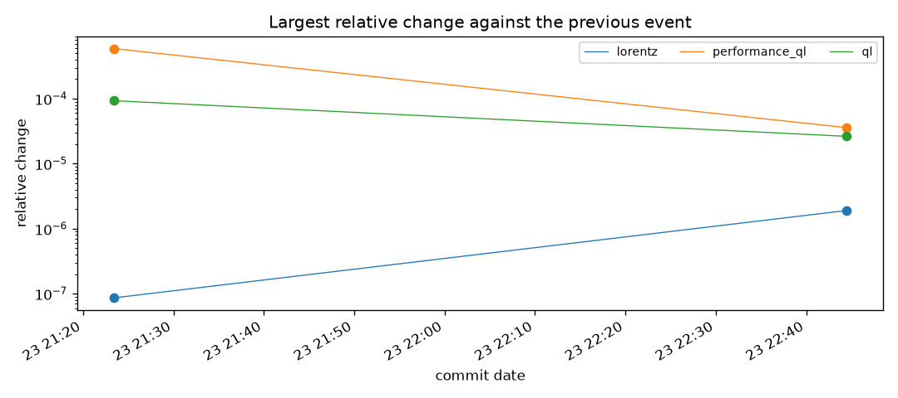
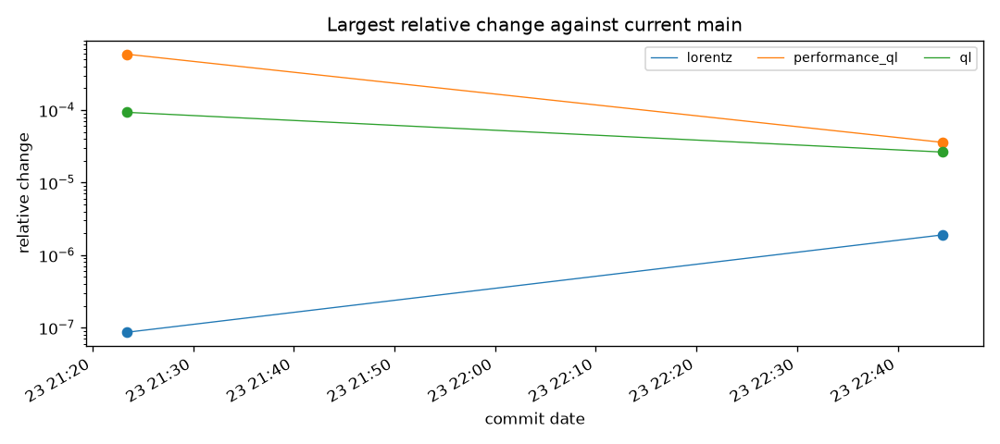
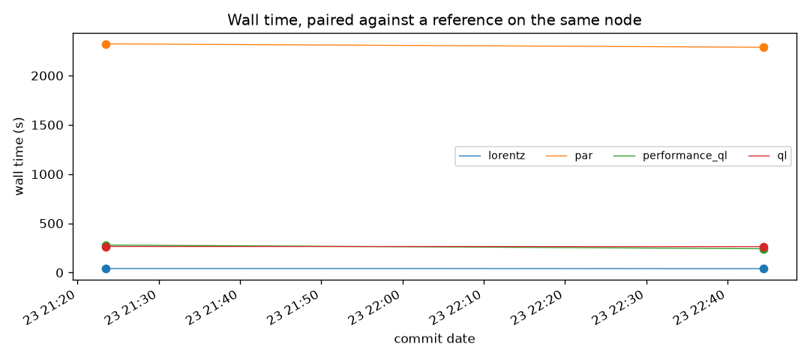
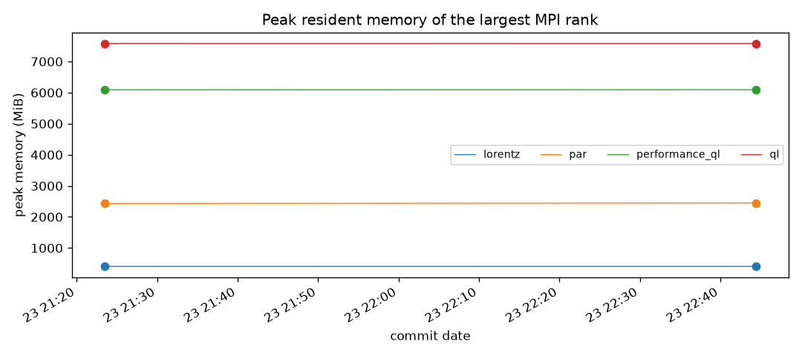

Each row is a build of NEO-2 with the libneo it used, run on the golden-record test cases. Relative change is max|x − xref| / max|xref| over each output dataset, largest over the datasets of a case. Filled circles mark NEO-2 events, open triangles libneo events, dotted lines builds or cases that failed.




| date | event | NEO-2 | libneo | change | classification | status |
|---|---|---|---|---|---|---|
| 2026-11-23 | neo2 | 81bae31b (#117) | 94f59c17 | cquad: clamp integrand abscissa to the open segment | intended | ok |
| 2026-11-23 | neo2 | 5295a123 (#255) | 94f59c17 | Conserve total energy in the collision-matrix quadrature | intended | ok |